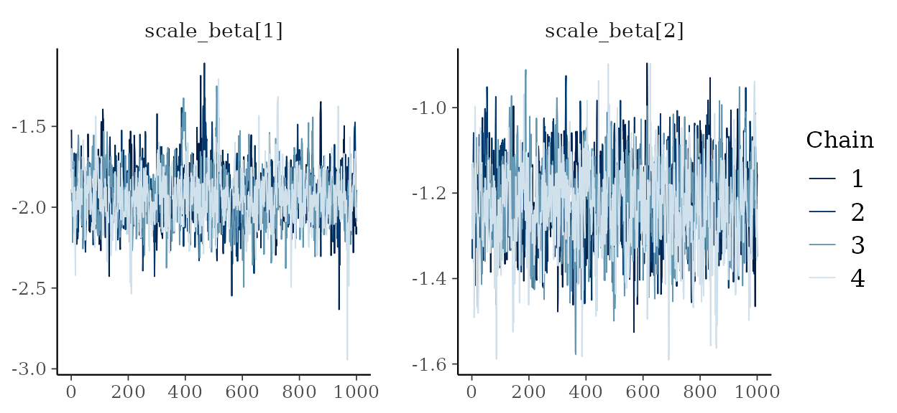
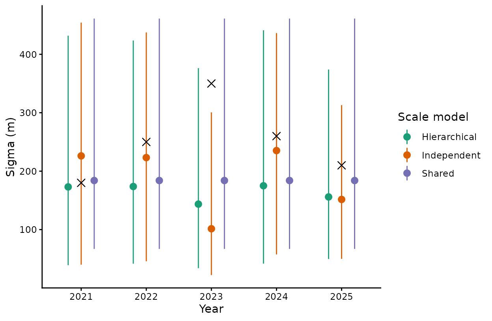

13. Estimate Scales of Effect with a Bayesian Model
Bill Peterman
Source:vignettes/v13-bayesian-scales.Rmd
v13-bayesian-scales.RmdWhat this vignette covers
multiScale_bayes() estimates the scale of effect and the
regression coefficients together as one posterior distribution, or the
combination of what the data say with what you assumed beforehand. This
vignette shows when that is worth doing, how to state your prior
knowledge about a scale in meters, how to fit the model and check the
fit, and how to read the posterior scales. It then lets the scale of
effect differ among years.
You work through two examples. The first fits the count data from
vignette("v01-quickstart", package = "multiScaleR"), which
you should read first. The second uses a stored fit to five years of
surveys, each with its own habitat map, prepared as in
vignette("v06-year-specific-rasters", package = "multiScaleR").
Decide whether you need a Bayesian model
multiScale_optim() is the default tool and is enough for
most analyses. Reach for multiScale_bayes() in three
situations.
- You know something about the scale. A prior states a plausible range for sigma, the kernel width, before the data are seen. It can steady the estimate when the data are sparse or the landscape effect is weak.
- The scale may differ among groups. A scale formula lets sigma change with a measured covariate or differ among years or regions. Years with few surveys can borrow information from the others.
- Predictions must carry all the uncertainty. Every posterior draw holds a scale and a set of coefficients, so predictions account for both at once.
The price is computation time, a prior you must justify, and sampling diagnostics you must check. The interface is experimental, and the coverage of its intervals has not been established for general ecological data sets.
Check the software you need
Each fitting method needs different optional packages.
method |
What it does | Optional packages |
|---|---|---|
"prepare" |
Checks the data, formulas, and priors without fitting | None |
"slice" |
Samples the posterior in R | None to fit, posterior for
diagnostics |
"sample" (default) |
Samples the posterior with NUTS, a gradient-based sampler |
RTMB, tmbstan,
rstan, posterior
|
"laplace", "marginal"
|
Approximate the posterior without sampling | RTMB |
check_bayes_setup(method = "slice") # are the packages for this method ready?
#> Bayesian package setup: slice
#> Package checks passed.
#> Slice sampling needs no optional fitting packages.
#> Install posterior (>= 1.6.0) to compute chain diagnostics.How to read the output: A passed check means the
packages load and meet their minimum versions. It does not test your
compiler or run a model. Installing the NUTS packages from source can
require a C++ compiler, which on Windows comes with Rtools. This
vignette uses "slice" and "sample".
vignette("v15-bayesian-computation", package = "multiScaleR")
covers the approximations, sampler settings, and parallel chains.
Fit one scale per landscape layer
Prepare the inputs
The first example uses the simulated counts from the Quick Start. The
true sigma is 250 m for land1 and 500 m for
land2.
data("landscape_counts") # counts and one site-level covariate
data("surv_pts") # survey locations (an sf object)
pts <- terra::vect(surv_pts) # convert to a terra SpatVector
land_rast <- terra::rast(system.file("extdata", "landscape.tif",
package = "multiScaleR"))
# bin = TRUE (the default) stores the distance-binned summaries the model uses
inputs <- kernel_prep(pts = pts, raster_stack = land_rast, max_D = 1700,
kernel = "gaussian", bin = TRUE, verbose = FALSE)State the priors in meters
You set priors through the priors argument. Anything you
leave out takes its default.
| Setting | Default | What it controls |
|---|---|---|
scale_median |
sqrt(min_D * max_D), here 184 m |
Prior median of sigma, in map units. One value, or a named vector with one value per layer |
scale_intercept_sd |
1 | Spread of the prior for sigma, as a standard deviation of log sigma |
scale_coef_sd |
0.5 | Prior standard deviation for the effect of a covariate on log sigma |
scale_group_sd |
0.5 | Prior for the spread of log sigma among groups such as years |
beta_sd |
2.5 | Prior standard deviation for each regression coefficient, on the link scale |
response_group_sd |
1 | Prior for the spread of random intercepts, on the link scale |
dispersion_log_mean,
dispersion_log_sd
|
0, 1 | Prior for the log of the negative binomial size or the Gaussian residual standard deviation |
The prior for sigma is normal on the log scale, so it multiplies and divides the median by the same factor. Suppose you believe the scale of effect is a few hundred meters and set the median to 300 m. Two lines of arithmetic show what the default spread then implies.
# Central 95% of the prior for sigma: median 300 m, SD of 1 on the log scale
prior_sigma <- 300 * exp(c(lower = -1.96, median = 0, upper = 1.96) * 1)
# The same values as effective distances (radius holding 90% of kernel weight)
prior_dist <- sapply(prior_sigma, function(s) {
kernel_dist(sigma = s, kernel = "gaussian")
})
round(rbind(sigma = prior_sigma, effective_distance = prior_dist))
#> lower median upper
#> sigma 42 300 2130
#> effective_distance 91 644 4570How to read the output: This prior puts 95% of its
weight on a sigma between 42 and 2130 m, a factor of 7.1 either side of
300 m. As an effective distance, the radius that holds 90% of the kernel
weight, that is 91 to 4570 m. If that range is wider than you can
defend, lower scale_intercept_sd. A value of 0.5 narrows
the range for sigma to 113 to 799 m. The prior has no hard limit at
max_D. A sigma beyond max_D weights the
extracted neighborhood almost evenly and gains nothing from more distant
cells.
Look at the priors before fitting
method = "prepare" checks the data, formula, and priors
without fitting. simulate_bayes_prior() then draws
parameters from the priors and simulates counts for your survey points,
so you can see everything the priors allow.
prepared <- multiScale_bayes(counts ~ site + land1 + land2, inputs,
landscape_counts, family = "poisson",
priors = list(scale_median = c(land1 = 300,
land2 = 300)),
method = "prepare")
prior <- simulate_bayes_prior(prepared, nsim = 1000, seed = 63)
# Prior for sigma in meters, one column per landscape layer
round(sapply(prior$log_scales, function(x) {
exp(quantile(x, c(0.025, 0.5, 0.975)))
}))
#> land1 land2
#> 2.5% 41 44
#> 50% 298 295
#> 97.5% 2323 2198
# Largest count in each simulated data set (the largest observed count is 10)
largest <- vapply(prior$responses, max, numeric(1))
signif(quantile(largest, c(0.025, 0.5, 0.975)), 2)
#> 2.5% 50% 97.5%
#> 2.0e+00 2.7e+04 8.5e+17How to read the output: The simulated prior for
sigma is close to the arithmetic above. The simulated counts are another
matter. The typical data set drawn from these priors has a largest count
of 27,000, against 10 observed, because the default
beta_sd = 2.5 allows very large effects on the log scale.
Extreme simulated counts show that a prior is loose for your design.
They are not evidence of a poor fit. If the range is implausible for
your surveys, set a smaller beta_sd and simulate again.
This example keeps the default.
Fit the model
The fitting call is the prepared call with a different
method. Slice sampling needs no optional packages for
fitting.
fit <- multiScale_bayes(counts ~ site + land1 + land2, inputs,
landscape_counts, family = "poisson",
priors = list(scale_median = c(land1 = 300,
land2 = 300)),
method = "slice", # four chains of 2000 iterations
seed = 5211)This fit takes 20 to 40 seconds, so the package stores the result.
chains, iter, and warmup set the
number of chains, the iterations per chain, and how many of those are
discarded as warm-up.
Check the fit before you read it
A sampler runs several independent chains. The results are
trustworthy only if the chains agree and contain enough draws.
summary() reports the checks on the model parameters.
diagnose_bayes_scales() repeats them for the fitted scales
and reports how precisely each interval limit is computed.
precision <- diagnose_bayes_scales(fit) # needs the posterior package
summary(fit)$diagnostics$passed # did the parameter checks pass?
#> [1] TRUE
summary(fit)$diagnostics$criteria # the rule the package applies
#> [1] "At least 2 chains; Rhat <= 1.01; bulk/tail ESS >= 100 per chain."
# Agreement among chains and effective sample sizes for each log sigma
precision$parameters[c("covariate", "rhat", "ess_bulk", "ess_tail")]
#> covariate rhat ess_bulk ess_tail
#> 1 land1 1.002665 905.3584 937.121
#> 2 land2 1.003975 1033.0974 1611.410
# Each interval limit on the log scale, with its Monte Carlo standard error
precision$quantiles[c("covariate", "probability", "estimate", "mcse")]
#> covariate probability estimate mcse
#> 1 land1 0.025 5.196872 0.012290191
#> 2 land1 0.500 5.507952 0.005139396
#> 3 land1 0.975 5.841998 0.027488507
#> 4 land2 0.025 6.022401 0.006516360
#> 5 land2 0.500 6.217000 0.003116837
#> 6 land2 0.975 6.396603 0.005060544
precision$passed # parameter checks and scale checks together
#> [1] TRUE
# Chain plots take the stored chains of a slice fit
bayesplot::mcmc_trace(fit$chains, regex_pars = "^scale_beta")
Trace plots for the two scale parameters, one line per chain.
How to read the diagnostics: The table lists each check, the value the package accepts, and what to do when a fit falls short.
| Diagnostic | Where to find it | Acceptable | If it fails |
|---|---|---|---|
| R-hat, or agreement among chains | rhat |
1.01 or less for every parameter | Find the parameter in
summary(fit)$diagnostics$parameters. Refit with another
seed and compare. A weak landscape effect leaves its scale
poorly identified, and longer chains do not cure that |
| Effective sample size, or the number of independent draws the chains are worth |
ess_bulk, ess_tail
|
At least 100 per chain (400 for four chains) | Increase iter
|
| Divergences (NUTS only) | summary(fit)$diagnostics$divergences |
0 | Raise adapt_delta in control
(default 0.9) and refit |
| Tree-depth hits (NUTS only) | summary(fit)$diagnostics$max_treedepth_hits |
0 | Raise max_treedepth in
control (default 12) and refit |
| E-BFMI, an energy check (NUTS only) | summary(fit)$diagnostics$ebfmi |
0.3 or more in every chain | Do not report the fit. Compare it with
method = "slice", which samples the same posterior |
| Monte Carlo standard error (MCSE) | mcse |
No fixed cutoff. Small next to the precision your question needs | Increase iter, and compare independent
runs when an interval limit matters |
Here every R-hat is 1.004 or less and the smallest effective sample
size is 905, so the fit passes. The MCSE needs a little translation. The
upper limit of log sigma for land1 has an MCSE of 0.027. An
error of that size on the log scale is about 3% of the distance, or
roughly 9 m of numerical error on a limit of 344 m. In the trace plots
the four chains overlap and none drifts, which is the pattern you want.
scale_beta[1] belongs to land1 and
scale_beta[2] to land2. The vertical axis is
the sampler’s internal log scale, so read the shape and not the
values.
Passing these checks means the computation is sound. It does not show that the model fits the data. More iterations improve numerical precision, but they cannot repair a wrong likelihood or an uninformative landscape.
Read the posterior scales
scales <- posterior_scales(fit) # sigma in map units (meters here)
scales[c("covariate", "median", "lower", "upper",
"p_below_min_D", "p_above_max_D")]
#> covariate median lower upper p_below_min_D p_above_max_D
#> 1 land1 246.6455 180.7061 344.4668 0 0
#> 2 land2 501.1973 412.5682 599.8042 0 0
# Posterior medians as effective distances
dist90 <- sapply(scales$median, function(s) {
kernel_dist(sigma = s, kernel = "gaussian")
})
round(setNames(dist90, scales$covariate))
#> land1 land2
#> 529 1076
# Regression coefficients on the log scale
coefs <- summary(fit)$coefficients
coefs[c("coefficient", "median", "lower", "upper")]
#> coefficient median lower upper
#> 1 (Intercept) 0.2882414 0.07100499 0.4802068
#> 2 site 0.1688255 0.00802232 0.3364049
#> 3 land1 -0.3877099 -0.60578511 -0.2299701
#> 4 land2 1.0899201 0.75829505 1.4906864How to read the output: Each row of
posterior_scales() is one landscape layer.
median is the posterior median of sigma, and
lower and upper bound a central 95% credible
interval, or the range that holds 95% of the posterior. The median for
land1 is 247 m (181 to 344 m) and for land2 it
is 501 m (413 to 600 m). Both intervals contain the true values of 250
and 500 m. As effective distances, habitat within about 529 m shapes the
count for land1, and within about 1076 m for
land2. The last two columns give the share of the posterior
below the raster cell size (min_D) and above
max_D. Both are zero, so the prepared inputs cover the
plausible scales.
For this Poisson model the coefficients are on the log scale. A one
standard deviation increase in kernel-weighted land1
multiplies the expected count by 0.68, and the same increase in
land2 multiplies it by 2.97.
What this means for your study. A Bayesian fit standardizes each landscape covariate once, at the prior median scale, and keeps that standardization fixed. Its coefficients therefore describe one standard deviation of the covariate at
scale_median, not at the fitted sigma. They are not comparable with coefficients frommultiScale_optim(). Refitting this model withscale_median = c(land1 = 250, land2 = 500)returns nearly the same scales (244 and 502 m), but theland2coefficient changes from 1.09 to 0.63. Reportscale_medianwith any coefficient.
Let the scale differ among years
Load the data
The second example has repeated counts at up to 25 sites in five years, with a different habitat map each year. The counts were simulated with a different sigma in each year, and two years have fewer surveys.
annual <- readRDS(system.file("extdata", "bayesian-annual-example.rds",
package = "multiScaleR"))
dat <- annual$data # one row per site and year
inputs_annual <- annual$inputs # prepared with kernel_prep_by_group()
head(dat, 3)
#> site year site_year count
#> 1 s1 2021 s1_2021 3
#> 2 s2 2021 s2_2021 5
#> 3 s3 2021 s3_2021 9
annual$truth # sigma used to simulate each year (m), surveys
#> year scale observations
#> 1 2021 180 25
#> 2 2022 250 25
#> 3 2023 350 9
#> 4 2024 260 25
#> 5 2025 210 16site_year links each count to the landscape prepared for
that site in that year. inputs_annual holds those
landscapes, which
vignette("v06-year-specific-rasters", package = "multiScaleR")
shows how to build.
Write the response formula and the scale formula
The model takes two formulas, and they describe different things. The
response formula here is
count ~ habitat + factor(year) + (1 | site). In it,
factor(year) lets the average count differ among years, and
(1 | site) is a random intercept that accounts for repeated
surveys at a site. The scale formula goes in scales, as
list(habitat = ~1 + (1 | year)), and its
(1 | year) gives each year its own sigma. A year effect in
the response changes how many animals you expect. A year effect in the
scale changes how far the habitat effect reaches.
| Scale formula | What it estimates |
|---|---|
~1 (default) |
One sigma for all observations |
~ elevation |
Sigma that changes with a numeric covariate.
exp() of its coefficient is the multiplicative change in
sigma per unit |
~ year |
A separate sigma for each level of a factor, as contrasts with the first level |
~0 + year |
A separate sigma per year, each with the same prior, and no sharing among years |
~1 + (1 | year) |
Partial pooling, in which years share a typical sigma and an estimated spread around it |
Partial pooling writes each year’s scale as , with . Here alpha is the log of the typical sigma and tau is the standard deviation of log sigma among years. The model treats years as exchangeable. It assumes no trend and no carry-over from one year to the next.
Read the between-year standard deviation as a multiplier
Because tau lives on the log scale, exp(tau) is a
multiplier. A tau of 0.3 means a year one standard deviation above
typical has a sigma 1.35 times the typical value, and a year one
standard deviation below has 0.74 times. About 95% of years fall between
0.56 and 1.8 times the typical sigma. The same reading applies to its
prior.
# Prior on tau: half-normal with scale 0.5 (scale_group_sd)
tau <- c(median = qnorm(0.75), upper_95 = qnorm(0.975)) * 0.5
round(rbind(tau = tau, multiplier = exp(tau)), 2)
#> median upper_95
#> tau 0.34 0.98
#> multiplier 1.40 2.66How to read the output: The default prior expects a
typical year-to-year multiplier near 1.4 and gives only a 5% chance to
multipliers above 2.7. If scales in your system could not plausibly
differ that much among years, lower scale_group_sd.
Prepare the model and read the specification
prepared_annual <- multiScale_bayes(
count ~ habitat + factor(year) + (1 | site), inputs_annual, dat,
scales = list(habitat = ~1 + (1 | year)),
row_id = "site_year", # column that links rows to landscapes
family = "nbinom2", # negative binomial counts
priors = list(scale_median = 250, scale_group_sd = 0.5),
method = "prepare"
)
prepared_annual
#> Experimental Bayesian landscape-scale model
#> Inference: prepared
#> Family: nbinom2 | observations: 100
#> Scale formulas:
#> habitat : ~1 + (1 | year)
info <- prepared_annual$inference_metadata
unlist(info[c("target", "method", "population_priors")])
#> target method population_priors
#> "posterior" "prepare" "proper"
info$uncertainty$intervals
#> [1] "not_provided"How to read the output: Preparation matches every
row to its landscape and checks the formulas, the priors, and missing
values. Errors in the data or formulas surface here, before you spend
any time sampling. The metadata states what the object is.
target is "posterior" and the priors are
"proper", so this will be a Bayesian fit with a prior on
every parameter. method is "prepare" and the
intervals are "not_provided", because nothing has been
estimated yet. A prepared object has no posterior draws and cannot be
used for prediction.
Sample and check the fit
bfit <- multiScale_bayes(
count ~ habitat + factor(year) + (1 | site), inputs_annual, dat,
scales = list(habitat = ~1 + (1 | year)),
row_id = "site_year", family = "nbinom2",
priors = list(scale_median = 250, scale_group_sd = 0.5),
method = "sample", # NUTS
chains = 4, iter = 6000, warmup = 3000, seed = 5211,
control = list(adapt_delta = 0.95, max_treedepth = 12)
)
bfit <- annual$fits$pooled # the stored result of the call above
d <- summary(bfit)$diagnostics # checks computed on the full chains
data.frame(passed = d$passed,
max_rhat = max(d$parameters$rhat),
min_bulk_ess = min(d$parameters$ess_bulk),
min_tail_ess = min(d$parameters$ess_tail),
divergences = d$divergences,
depth_hits = d$max_treedepth_hits,
min_ebfmi = min(d$ebfmi))
#> passed max_rhat min_bulk_ess min_tail_ess divergences depth_hits min_ebfmi
#> 1 TRUE 1.000869 3758.789 3569.568 0 0 0.6211173How to read the output: Compare each column with the
table in the first example. R-hat is below 1.01, both effective sample
sizes are far above 400, no transition diverged or reached the
tree-depth limit, and E-BFMI exceeds 0.3, so the fit passes. The stored
object keeps 2000 of the 12,000 draws without their chain order, so
diagnose_bayes_scales(bfit) reports
available = FALSE. Run it on your own fit as in the first
example.
Read the annual scales and the between-year spread
posterior_scales(bfit)[c("group", "median", "lower", "upper", "p_below_min_D")]
#> group median lower upper p_below_min_D
#> 1 year=2021 173.0828 39.08530 431.8495 0.1935
#> 2 year=2022 173.7422 41.71146 423.5986 0.1840
#> 3 year=2023 143.6104 34.01918 376.3533 0.2665
#> 4 year=2024 175.0161 41.81391 441.1051 0.1665
#> 5 year=2025 155.9366 49.68400 373.9298 0.1870
summary(bfit)$group_sd$log_scale_group_sd # tau, spread of log sigma among years
#> mean median sd lower upper term
#> 1 0.2907021 0.2351976 0.2327386 0.01032759 0.8547712 habitat:year
summary(bfit)$group_sd$response_group_sd # spread of site intercepts, log scale
#> mean median sd lower upper term
#> 1 0.3178393 0.3152256 0.08444491 0.1623303 0.508197 siteHow to read the output: Each row of
posterior_scales() is one year’s sigma in meters after
partial pooling. The medians run from 144 to 175 m, and every interval
spans more than 300 m. These are separate intervals for each year, not a
joint band. p_below_min_D shows that 17 to 27% of each
posterior lies below the 100 m cell size of the maps, so part of each
posterior sits below what the maps can resolve.
The posterior median of tau is 0.24, a multiplier of 1.27. Its interval runs from 0.01 to 0.85, or multipliers of 1.01 to 2.35. Five years cannot tell you whether the scales are nearly equal or differ more than twofold. Tau describes variation among years. It is not the standard error of any one year’s sigma. Its prior also rules out exactly zero, so a positive lower limit is not evidence that years differ. The response standard deviation of 0.32 is on the log count scale, so a site one standard deviation above average has 1.37 times the expected count.
Report medians and interval limits for sigma. The mean and standard
deviation of a distance can be unstable when the upper tail is long, and
posterior_scales(bfit, scale = "log") gives them on the log
scale instead. plot(bfit) draws the annual intervals, and
plot(bfit, type = "group_sd") draws the two standard
deviations.
Compare shared, separate, and partially pooled scales
To see what pooling does, compare the fit with two others that the
package also stores. One uses scales = list(habitat = ~1),
a single sigma for all years (seed 5212). The other uses
scales = list(habitat = ~0 + year), a separate sigma for
each year with no sharing (seed 5213). Every other argument matches the
call above.
comparison <- annual$comparison # posterior_scales() of the three stored fits
ggplot2::ggplot(comparison, ggplot2::aes(x = year, y = median, ymin = lower,
ymax = upper, color = model)) +
ggplot2::geom_pointrange(position = ggplot2::position_dodge(width = 0.6)) +
ggplot2::geom_point(ggplot2::aes(y = truth), color = "black", shape = 4,
size = 3) +
ggplot2::scale_color_brewer(palette = "Dark2") +
ggplot2::labs(x = "Year", y = "Sigma (m)", color = "Scale model") +
ggplot2::theme_classic()
Posterior sigma by year under three scale models. Crosses mark the values used to simulate the data.
How to read this plot: Points are posterior medians and bars are 95% credible intervals. The legend labels the partially pooled model Hierarchical and the separate-year model Independent. Look at 2023, the year with nine surveys. Estimated alone, its sigma is 101 m against a true value of 350 m. With partial pooling it moves to 144 m, closer to the other years. Pooling steadies a poorly sampled year by pulling it toward the rest, and the same pull can drag a truly unusual year too far. The shared model reports 184 m for every year. In this data set its intervals and those of the pooled model contain all five true values, and the separate-year model misses one. A single simulated data set cannot rank the three models. It shows how each one behaves.
Check how much the prior on the spread matters
With few groups, the prior on tau can drive the answer. The stored
example repeats the pooled fit with scale_group_sd set to
0.25 (seed 5214) and 0.75 (seed 5215).
annual$sensitivity # posterior of tau under three priors
#> prior_sd median lower upper
#> 1 0.25 0.1502693 0.007986508 0.4876333
#> 2 0.50 0.2351976 0.010327586 0.8547712
#> 3 0.75 0.2757591 0.011352487 1.1957444How to read the output: prior_sd is
scale_group_sd, and the other columns summarize the
posterior of tau. Its median rises from 0.15 to 0.28 as the prior
widens, and the upper limit more than doubles. As multipliers, the
medians are 1.16 and 1.32.
What this means for your study. With five years, the data say little about how much the scale varies, and the prior fills the gap. State the prior you used, repeat the fit with a defensible alternative, and report whether your conclusions change.
Check the model against the data
A posterior predictive check simulates new data sets from the fitted model and asks whether the observed data look like them.
replicated <- simulate(bfit, nsim = 200, seed = 94) # one column per data set
# Three features of a count data set
features <- function(y) {
c(mean = mean(y), zero_fraction = mean(y == 0), maximum = max(y))
}
sims <- vapply(replicated, features, numeric(3))
data.frame(observed = features(dat$count),
lower = apply(sims, 1, quantile, 0.025),
median = apply(sims, 1, median),
upper = apply(sims, 1, quantile, 0.975))
#> observed lower median upper
#> mean 26.44 23.05725 26.72 30.9475
#> zero_fraction 0.04 0.00000 0.01 0.0400
#> maximum 220.00 124.97500 201.00 337.0250How to read the output: Each row compares one
feature of the observed counts with its central 95% range across 200
simulated data sets. The package sets no pass mark for this check. An
observed value far outside its range means the model cannot reproduce
that feature. Here the mean and the maximum sit inside their ranges, and
the share of zeros sits at the upper edge, so look at where the zeros
fall by year and site. When a feature is missed, revisit the family, the
covariates, and the random intercepts in the response formula, then fit
again. aic_tab() and bic_tab() do not accept
Bayesian fits, so compare candidate models with checks like this one.
vignette("v14-bayesian-prediction", package = "multiScaleR")
covers expected counts, new sites, and years that were not surveyed.
Current restrictions
| Part of the model | Supported | Not supported |
|---|---|---|
| Family |
"nbinom2" (default),
"poisson", "binomial",
"gaussian"
|
Zero inflation, imperfect detection, other families |
| Landscape covariates | Gaussian and exponential kernel means prepared with
bin = TRUE, and the weighted surface metric
"sq"
|
Other kernels and other optimized surface metrics |
| Response formula | Fixed effects, interactions with landscape covariates, offsets, random intercepts | Random slopes, spatial random fields, observation weights |
| Scale formula | Intercept, covariates, random intercepts | Autocorrelation among years or other groups |
method = "marginal" |
Exactly one group standard deviation across all scale formulas | Two or more. Use "sample",
"slice", or "laplace"
|
| Model comparison | Posterior predictive checks |
aic_tab() and bic_tab()
|
?multiScale_bayes gives the full rules for formulas,
including splines and transformed covariates.
Quick reference
# 1. Prepare binned inputs and look at the priors
inputs <- kernel_prep(pts = pts, raster_stack = land_rast, max_D = 1700,
kernel = "gaussian", bin = TRUE, verbose = FALSE)
prepared <- multiScale_bayes(counts ~ site + land1 + land2, inputs,
landscape_counts, family = "poisson",
priors = list(scale_median = c(land1 = 300,
land2 = 300)),
method = "prepare")
prior <- simulate_bayes_prior(prepared, nsim = 1000, seed = 63)
kernel_dist(sigma = 300, kernel = "gaussian") # a sigma as effective distance
# 2. Fit one scale per layer, check the fit, then read it
fit <- multiScale_bayes(counts ~ site + land1 + land2, inputs,
landscape_counts, family = "poisson",
priors = list(scale_median = c(land1 = 300,
land2 = 300)),
method = "slice", seed = 5211)
summary(fit)$diagnostics$passed # parameter checks
precision <- diagnose_bayes_scales(fit) # scale checks and MCSE
bayesplot::mcmc_trace(fit$chains, regex_pars = "^scale_beta")
posterior_scales(fit) # sigma in map units
summary(fit)$coefficients # coefficients on the link scale
# 3. Let the scale differ among years (method = "prepare" checks it first)
bfit <- multiScale_bayes(
count ~ habitat + factor(year) + (1 | site), inputs_annual, dat,
scales = list(habitat = ~1 + (1 | year)),
row_id = "site_year", family = "nbinom2",
priors = list(scale_median = 250, scale_group_sd = 0.5),
method = "sample",
chains = 4, iter = 6000, warmup = 3000, seed = 5211,
control = list(adapt_delta = 0.95, max_treedepth = 12)
)
summary(bfit)$diagnostics # R-hat, ESS, divergences, E-BFMI
posterior_scales(bfit) # sigma for each year
summary(bfit)$group_sd$log_scale_group_sd # tau, spread of log sigma
summary(bfit)$group_sd$response_group_sd # spread of site intercepts
replicated <- simulate(bfit, nsim = 200, seed = 94) # predictive checkSummary of key functions
| Function | Purpose |
|---|---|
check_bayes_setup() |
Report whether the optional packages for a method are installed |
kernel_prep(),
kernel_prep_by_group()
|
Prepare binned landscape inputs for one map or for one map per group |
multiScale_bayes() |
Prepare, sample, or approximate a Bayesian scale model |
simulate_bayes_prior() |
Simulate scales and responses from the priors before fitting |
diagnose_bayes_scales() |
Check chain agreement and numerical precision of the fitted scales |
posterior_scales() |
Summarize sigma for each layer and group, in map units |
summary() |
Report coefficients, group standard deviations, and sampler diagnostics |
plot() |
Draw the fitted scales or the group standard deviations with intervals |
kernel_dist() |
Convert a sigma to an effective distance |
simulate() |
Simulate replicated observations for posterior predictive checks |
predict_scales(),
predict()
|
Predict scales and expected responses for observed or new groups |
See also
-
vignette("v01-quickstart", package = "multiScaleR"), the core workflow withmultiScale_optim(). -
vignette("v06-year-specific-rasters", package = "multiScaleR"), preparing a separate map for each year. -
vignette("v15-bayesian-computation", package = "multiScaleR"), sampler settings, parallel chains, and the faster approximations. -
vignette("v14-bayesian-prediction", package = "multiScaleR"), predicting new sites, new years, and totals. -
vignette("v09-estimates-and-intervals", package = "multiScaleR"), what each interval includes and leaves out. -
vignette("v07-fitting-methods", package = "multiScaleR"), which covariate types each fitting method accepts. - The help page
?"multiScaleR-glossary"defines the terms used in these vignettes.